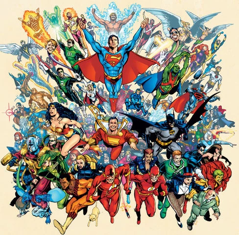

Universo da DC
Como a DC e seu universo foi pensado
- A concepção do universo DC foi algo natural que de começo não foi algo pensado e sim algo que foi sendo construido com o passar do tempo e com varias reformulações de seus universos e HQ's, No começo ela foi pensada em apenas uma forma de faturar com o mercado da epoca, já que o mercado dos quadrinhos avia começado a se expandir naquela epoca, então viram nesse mercado a oportunidade de faturar junto da nova fixação dos jovens daquela epoca por quadrinhos como uma forma de lucrar se juntando a varias empresas como Warner Bros. Discovery, Vertigo Comics, WildStorm e varias outras.
Como ela foi criada?
- No começo ela se chamava National Allied Publications mas em 1937 passou a usar o nome detective comics sigla para DC, o sucesso veio com o lançamento do heroi Superman em 1938, o seu primeiro heroi dos quadrinhos, depois surgiram varos outros sucessos como Batman em 1939 e Mulher Maravilha em 1941 que foram os pricipais pioneiros para o sucesso da DC tanto quanto para seu universo de herois tanto quanto uma produtora, e que são herois consolidados e amados ate os dias de hoje.
Seus principais herois
Superman
- Nome: Superman (Clak Kent /Kal-el)
- Poderes: Com os poderes de super força, voo, visão de calor, super velocidade, invulnerabilidade, visão de raio-x, super sopro.
- Curiosidades: Foi o primeiro heroi da DC criado (1938) e o S em seu peito representa esperança.
Batman
- Nome: Batman (Bruce Wayne)
- Poderes: Nenhum poder, mas tendo sua intligencia como sua maior arma sendo um Gênio detetive, Mestre em artes marciais, Usa technologia avançada.
- Curiosidades:Sua motivação é vingar a morte dos pais e proteger Gotham da criminalidade e o simbolo no seu peito singnifica Justiça, medo e estratégia.